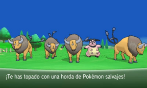

En este pequeño blog explicare todos los metodos utilizados para lo que se conoce como Shiny Huntig de la 6ta generacion, que en si es la busqueda de pokemon variocolor, los cuales, en esta generacion de juegos tienen una posibilidad de 1/4096 en aparecer, el cual puede ser reducido con las tecnicas que explicare a continuacion. Y de esta forma poder fomentar y motivar a mas personas a buscar este tipo de Pokemon.
Random Encounter
Este es el metodo mas normal, debido a que se trata de encontrar pokemon en la hierba alta hasta que el pokemon Shiny aparezca. Este metodo no aumenta las posiblidades de encuentro. Solo se puede modificar teniendo el amuleto iris, el cual deja las posibildades en aproximadamente 1/1365.
Metodo Masuda
El Método Masuda, introducido en la 4ª generación, consiste en poner en la guardería a un Pokémon extranjero junto con un Pokémon de tu partida y empezar a abrir los huevos. La probabilidad regular de este método es de 1/683 huevos, o con el Amuleto Iris pasa a ser de 1/512.
Soft Reset
El Soft Reset, o por sus siglas, “SR”, es un reseteo del juego sin la necesidad de salir de este e iniciarlo nuevamente desde el menú de la consola. Este método es el único posible para algunos Pokémon, como serían los legendarios en RoZa, pero también se puede hacer con otros Pokémon como los fósiles o Pokémon NPC.
Hordas

Las Hordas Pokemon, son aquellas en donde en lugar de encontrar a un Pokemon, te encuentras con 5 a la vez, lo que aumenta considerablemente la posibilidad de Shiny. Para hacerlo, lo único que necesitas es un Pokémon con el movimiento Dulce Aroma y usarlo en un lugar donde aparezcan las hordas.
Pesca en cadena
La Pesca En Cadena es un método exclusivo de esta generación. Para llevarlo a cabo tienes que, como su nombre lo indica, hacer una pesca encadenada, ósea, con la caña de Pescar sacar Pokémon tras Pokémon sin fallar ninguno. Para que las probabilidades empiecen a subir, debes llevar a tu cadena al 20, y la máxima probabilidad estando cuando ya lleves 40.
Friend Safari
El Friend Safari, también exclusivo de XY, es una pequeña casa al norteste de Ciudad Batik donde, con tus amigos registrados en tu 3DS, puedes encontrar Pokémon raros o de otras regiones.Dentro del Safari tus posibilidades de encuentro con un shiny es de 1/1000
PokeRadar
El Poké Radar es un objeto clave exclusivo de las regiones de Sinnoh y Kalos. Este objeto te permite hacer cadenas para encontrar Pokémon raros y mas importante, Pokémon variocolor.Para empezar la búsqueda necesitaras: el Poké Radar, MUCHOS repelentes (unos 100 max repelentes aprox), paciencia y nervios de acero.Luego de tener lo anterior dicho listo, debes encontrar una zona donde haya mucha hierba alta, recomendablemente, sin hoyos entre medio. Irás al centro y activarás el Radar, que se recarga cada 50 pasos.
Al llegar al 40 Pokémon en la cadena, las probabilidades no subirán más, y solo deberas recargarlo hasta que el shiny aparezca.
Una vez empezada la cadena, la hierba se puede mover de 4 formas distintas:
1. Se mueve muy poco
2. Se mueve normal y suena
3. Se mueve bastante y suena mucho
4. Se mueve bastante y salen brillos
DexNav
Las cadenas en este método consisten en buscar a un Pokémon mediante la función de búsqueda. Para continuar la cadena tienes que capturar o debilitar al Pokémon, si huyes, la cadena se romperá. No importa si te aparece otro Pokémon mientras tú estés buscando uno. Siempre y cuando sea mediante el dexnav y no un encuentro común. Y si lo derrotas o lo capturas, la cadena continuará de todos modos. Al continuar la cadena y volver a buscar al Pokémon, casi siempre volverá a aparecer al primer intento.